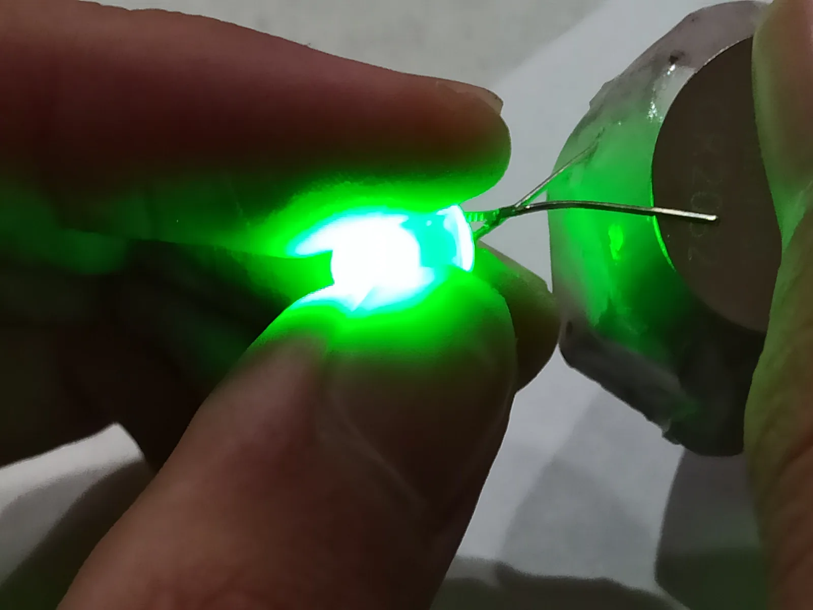

▲ 나트륨이온 배터리 셀(자료사진). 중국과학원 연구팀이 열폭주를 원천 차단하는 전해질을 개발했다 ⓒ Wikimedia Commons (CC BY-SA 4.0)
전기차 배터리 화재의 가장 무서운 지점은 '열폭주(thermal runaway)'다. 한 셀에서 시작된 과열이 연쇄적으로 옆 셀로 번지면서 순식간에 걷잡을 수 없는 화재로 커지는 현상이다. 중국과학원 물리연구소 후용성(胡勇胜) 연구팀이 이 열폭주 자체를 원천 차단하는 전해질 기술을 개발해 국제 학술지 네이처 에너지에 발표했다.
1. 150도, 액체가 벽으로 변하는 순간

▲ 배터리 안전성 실험 장면(자료사진). PNE 전해질은 특정 온도를 넘으면 물리적 상태가 바뀐다 ⓒ Wikimedia Commons
PNE 전해질의 핵심은 온도 반응성이다. 평상시에는 일반 전해질처럼 액체 상태를 유지하지만, 배터리 내부 온도가 섭씨 150도를 넘어서는 순간 빠르게 고체로 변한다. 이렇게 생성된 고체가 배터리 내부에 치밀한 차단막을 형성해, 과열된 부위의 열이 다른 셀로 전달되는 것을 물리적으로 막는다. 연구팀은 이 전해질을 적용한 3.5Ah급 원통형 나트륨이온 셀로 못 관통 시험과 섭씨 300도 고온 노출 시험을 진행했는데, 두 시험 모두에서 연기·발화·폭발 징후 없이 안정성을 유지한 것으로 확인됐다.
2. 왜 '차단'이 '소화'보다 중요한가

▲ 배터리 연구 실험 장면(자료사진). 불을 끄는 기술보다 확산을 막는 기술이 근본적인 해법으로 꼽힌다 ⓒ Wikimedia Commons
기존 배터리 화재 대응 기술 상당수는 화재가 이미 시작된 이후 이를 진압하거나 억제하는 데 초점을 맞춰왔다. 흔히 쓰이는 '난연(불이 잘 옮겨붙지 않도록 늦추는)' 전해질 역시 마찬가지다. 연구팀은 이번 연구에서 인산에스터 계열의 난연성 전해질을 쓰더라도 극단적인 조건에서는 여전히 심각한 열폭주가 발생할 수 있다는 점을 확인했다며, 난연이 곧 절대적 안전을 뜻하지는 않는다고 밝혔다. PNE 기술은 이와 접근 자체가 다르다. 과열이 다른 셀로 번지는 경로 자체를 원천 차단하기 때문에, 화재가 대형화되기 전 단계에서 문제를 끝낸다. 연구팀은 이를 "업계 기존 나트륨 배터리 안전 기술과 비교해 세대 수준의 비약적 도약"이라고 평가했다.
3. 비용은 기존과 비슷 — 상용화 가능성

▲ 전기차용 배터리 팩 내부 구조(자료사진). 새 전해질 기술이 기존 생산 공정에 얼마나 매끄럽게 얹힐 수 있는지가 상용화의 관건이다 ⓒ Wikimedia Commons
신기술이 아무리 뛰어나도 비용이 크게 오르면 실제 적용은 어려워진다. 연구팀에 따르면 PNE 기술이 적용된 나트륨이온 배터리는 현재 널리 쓰이는 탄산염계 전해질과 비용이 거의 동일한 수준이라고 한다. 이는 대량 생산 단계에서도 원가 부담 없이 적용할 수 있다는 뜻으로, 실제 상용화 가능성을 높이는 요인으로 꼽힌다.
4. 나트륨이온 배터리와 전기차의 미래

▲ 나트륨 금속이 전기를 전도하는 모습(자료사진). 나트륨은 지구상에 풍부해 원가 절감 잠재력이 큰 원소로 꼽힌다 ⓒ Wikimedia Commons (CC BY-SA 4.0)

▲ 배터리 안전성 테스트 장면(자료사진). 나트륨이온 배터리 상용화를 위해서는 추가 검증이 필요하다 ⓒ Wikimedia Commons (CC BY 4.0)
나트륨이온 배터리는 리튬이온 배터리보다 에너지 밀도는 낮지만, 원료인 나트륨이 지구상에 훨씬 풍부해 원가 절감 잠재력이 크다는 평가를 받아왔다. 다만 안전성 문제가 상용화의 걸림돌 중 하나로 지적돼 왔는데, 이번 PNE 기술이 이 문제를 상당 부분 해소한다면 나트륨이온 배터리의 상용화 속도가 빨라질 수 있다. 다만 논문 발표 단계인 만큼, 실제 양산 배터리에 적용되기까지는 추가 검증과 시간이 필요하다.
5. 정리
체크포인트
- 중국과학원 연구팀이 나트륨이온 배터리의 열폭주를 원천 차단하는 PNE 전해질을 개발했다.
- 섭씨 150도를 넘으면 고체로 변해 열 전달 자체를 막는 방식이다.
- 불을 끄는 기술이 아니라 번지는 경로를 차단하는 근본적 접근이라는 평가다.
- 비용이 기존 전해질과 비슷해 실제 상용화 가능성이 있다.